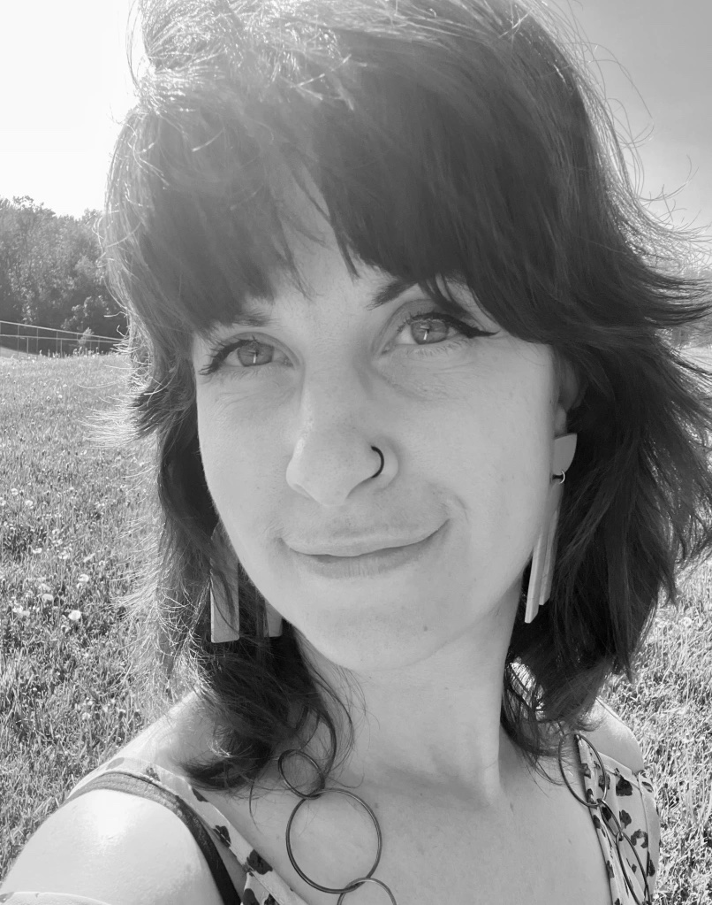
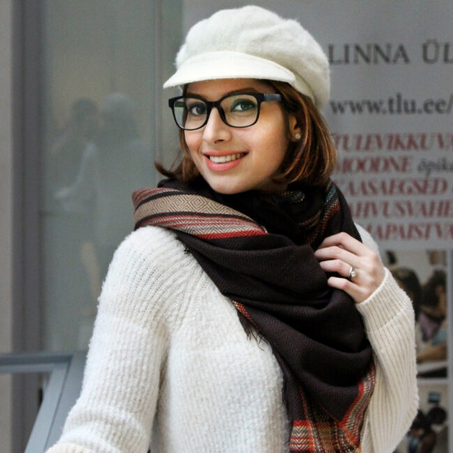
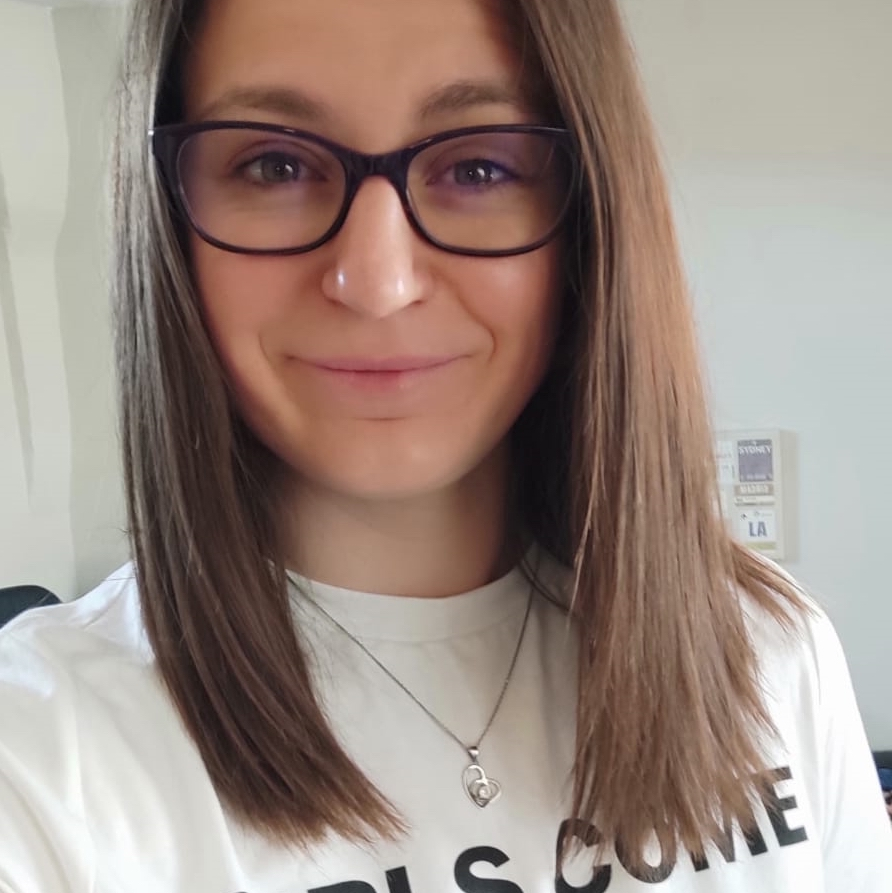
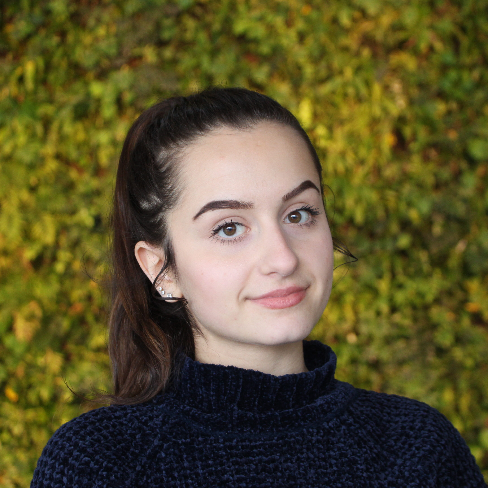

Dr. Constance Crompton (she/her)
Project Director
Constance is a white, queer, able-bodied settler and Canada Research Chair in Digital Humanities. Her research interests are in linked data, data modelling, code as a representational medium, queer history, and Victorian popular culture. She is an associate director of the Digital Humanities Summer Institute (University of Victoria) and former vice-president of the Canadian Society for Digital Humanities/Société canadienne des humanités numériques.

Dr. Bridget Moynihan (she/her)
Postdoctoral Fellow
Bridget was a Postdoctoral Fellow with the Implementing New Knowledge Environments (INKE) Partnership and with Library and Archives Canada-Bibliothèque et Archives Canada (LAC-BAC). Prior to this fellowship, she completed her PhD at the University of Edinburgh (2020), her MLIS from Western University (2021), and her MA from the University of Calgary (2015). Bridget loves working in both physical archives and digital spaces, but especially loves working at the points where the two intersect. She joined the lab in May 2023 and her last contribution before leaving HDL was on compiling the literature review for BFQ.

Moni Razavi (she/her/elle)
Research Assistant
Moni is currently a PhD candidate in Translation Studies at the University of Ottawa. She graduated in Literature, Visual Culture, and Film Studies from Tallinn University in Estonia where she joined the Estonian Society for Digital Humanities. Starting from March 2022, Moni works as a research assistant, research coordinator and administrative assistant in uOttawa's Humanities Data Lab to analyze the data on the first 10 editions of Bartlett’s Familiar Quotations and TEI in the LGLC project. Her doctoral thesis aims at decolonizing Adaptation Studies by DH methodology in three levels of epistemology, discipline, and practice.

Alice Defours (she/her)
Research Assistant
Alice Defours is a PhD student in Digital Humanities at the university of Ottawa and a metadata architect for the Humanities Data Lab, as well as research assistant for the LINCS project. Prior to joining uOttawa, she graduated from the Université Lumière Lyon II in “Mondes Anciens” (history-archaeology) then in “Humanités Numériques” (Digital Humanities). As a cultural programs’ coordinator, she values the impact of communication and transmission of knowledge through its accessibility. She also works as a freelance event manager and game designer.

Lori Antranikian
Research Assistant
Lori was a fourth-year computer science student when she worked on BFQ. She was really intrigued with digital humanities after taking DHN1100, an introductory course to the digital humanities in fall 2018. She joined the lab as a research assistant in January 2019 where she was working to analyze data on the first 10 editions of Bartlett’s Familiar Quotations.
